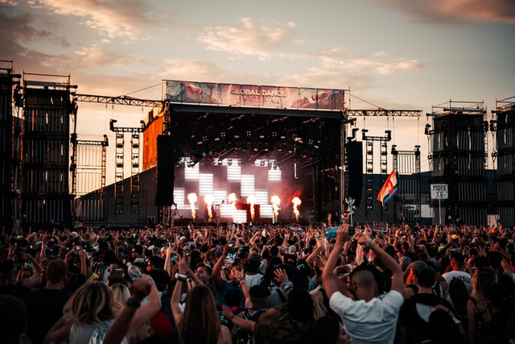

World Music Festival
One of the biggest festivals that Vienna has to offer, Donau island I is not known simply for its rich history and consistently strong lineups, but also for its longstanding links to charitable and community causes. What's more, you'd be hard pushed to find many more naturally beautiful settings than the river nature reserve that it calls home.
4.9 avarage from 15,500 visitors ratings

